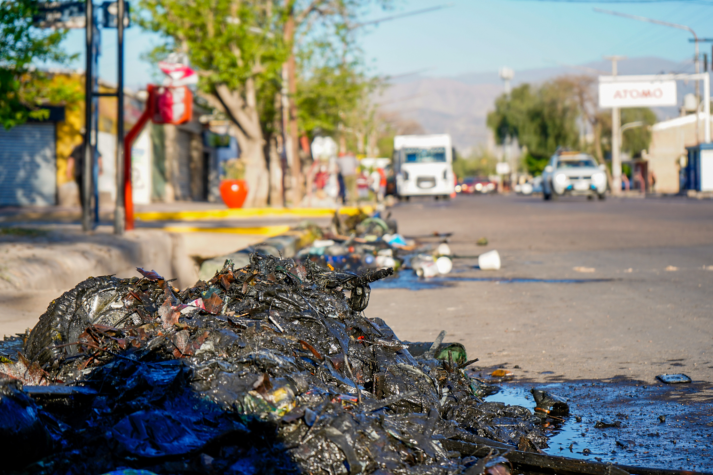
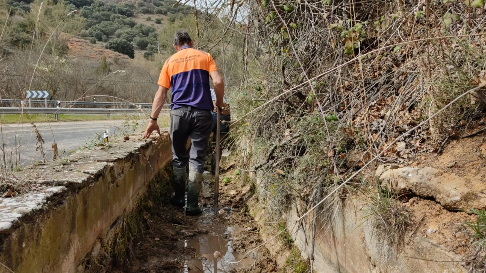

¿Quienes somos?
Nuestro proyecto se trata de concientizar a la mayor cantidad de personas posibles sobre la contaminación que producimos y como esto afecta a nuestras vidas y como podemos evitarlo
¿Por qué nos interesan las acequias limpias?
La contaminación en las acequias puede traer diversos problemas, como la propagación de enfermedades, y la disminución de la disponibilidad de agua para consumo humano y agricultura. Es importante tomar medidas para prevenir y reducir la contaminación en las acequias.
¿Qué hacemos para limpiar las acequias?
Para mantener limpias la acequias recomendamos no tirar basura en ella para eso nuestra idea es poder poner mas puntos de reciclaje en los barrios y hacer mas facil la tarea y tener un lugar adecuado para tirar la basura.
¿Cómo puedes ayudar?
Tú puedes ayudar a mantener limpias las acequias y prevenir la contaminación al hacer un uso responsable de los recursos hídricos, evitando arrojar residuos y desechos en las acequias, y participando en actividades de limpieza y conservación de las mismas.
Contáctanos
Si quieres conocer más sobre nuestro proyecto, participar en nuestras actividades, o reportar la contaminación en alguna acequia, puedes contactarnos a través de nuestras redes sociales o correo electrónico. Vmoreno@fundacionedison.org.ar
Trabajos
AP1
AP2
AP3
AP4